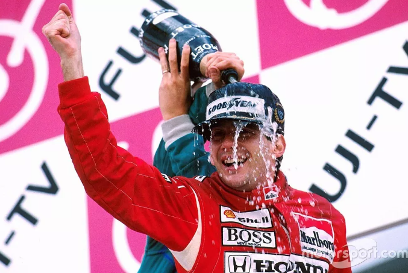
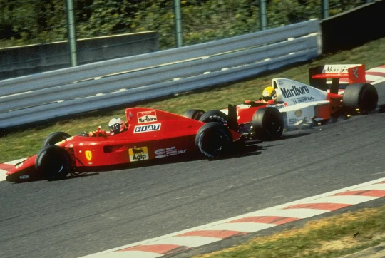
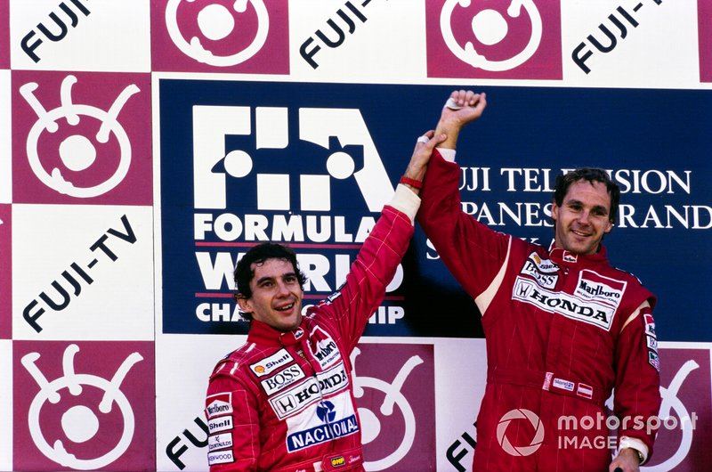
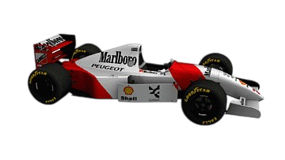

Ayrton Senna da Silva: Um ícone do automobilismo mundial
Ayrton Senna foi um dos maiores pilotos da história da Fórmula 1, destacando-se por sua habilidade incomparável ao volante, espírito competitivo e dedicação ao esporte. Nascido em São Paulo, em 21 de março de 1960, Senna conquistou três títulos mundiais (1988, 1990 e 1991) e se tornou uma lenda graças ao seu talento único em condições adversas, como corridas em pista molhada, onde demonstrava maestria e coragem excepcionais. Sua precisão em volta rápida era lendária, garantindo 65 pole positions ao longo de sua carreira, um recorde que durou muitos anos. Além disso, Senna era conhecido por sua agressividade controlada e inteligência estratégica, que lhe permitiam realizar ultrapassagens memoráveis e vencer disputas intensas. Senna também foi um perfeccionista, trabalhando em estreita colaboração com engenheiros para ajustar os carros ao seu estilo de pilotagem. Fora das pistas, destacou-se por sua humildade e filantropia, ajudando crianças carentes no Brasil por meio do Instituto Ayrton Senna, fundado após sua morte trágica em 1994. Sua paixão pelo automobilismo, aliada a seu carisma e determinação, fez de Ayrton Senna não apenas um campeão, mas um símbolo de excelência, inspiração e orgulho para milhões de fãs ao redor do mundo.
Principais
Conquistas


Campeão Mundial
30 de outubro de 1988 em Suzuka - Japão
A corrida foi a primeira decisão de título entre Senna e Prost, ambos com carros McLaren e motor Honda V6 turbo.

Bicampeonato Mundial
21 de outubro de 1990 em Suzuka - Japão
Senna ganhou bicampeonato da F1 ao atingir Prost na largada do GP do Japão.

Tricampeonato Mundial
20 de outubro de 1991 em Suzuka - Japão
O piloto brasileiro chegou em segundo lugar na prova, mas garantiu o título após Nigel Mansell abandonar a corrida na décima volta.
